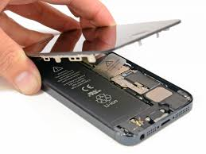
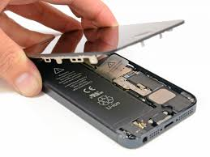

Nossos Serviços!
"Seu celular em boas mãos: reparos rápidos, confiáveis e com garantia de quem entende do assunto!"
- Manutenção de proximidade, sensor de luz ou giroscópio
- Serviço de recuperação de dados e software (flashing)
- Reparo de botões físicos
- Troca de caixa, laterais ou tampa traseira
- Troca de conector de carregamento (porta USB‑C, Lightning, micro‑USB)
- Conserto de alto-falante e microfone
- Substituição de bateria
- Reparo ou substituição da câmera
- Troca de tela (tela quebrada ou sem resposta)
- Reparo de botões físico
- Assistência de software
- Proteção e manutenção preventiva
Sensores que afetam o funcionamento de funções como brilho automático, giroscópio para jogos, etc.
Correção de sistema operacional, travamentos, recuperação de arquivos após danos lógicos
Botões de volume, power ou home/parâmetro com problemas de funcionamento.
Restauração de aparência ou estrutura: partes esteticamente danificadas ou quebradas.
Problemas ao carregar ou conexão instável com o cabo.
Ruído ruim, falha no áudio ou microfone que não funciona durante ligações.
Quando a bateria não carrega, dura pouco ou incha.
Problemas com foco, manchas, câmera traseira ou frontal com defeito
Substituição de display (LCD e/ou touchscreen) — pode ser parcial (touchscreen) ou completa
Botões de volume, power ou home/parâmetro com problemas de funcionamento
Correção de bugs, remoção de vírus, atualizações, recuperação de dados, reinstalação de sistemas operacionais e ajustes para máxima performance
Aplicação de películas protetoras, capas, limpeza de placas e manutenção preventiva para prolongar a vida útil do aparelho.
 
